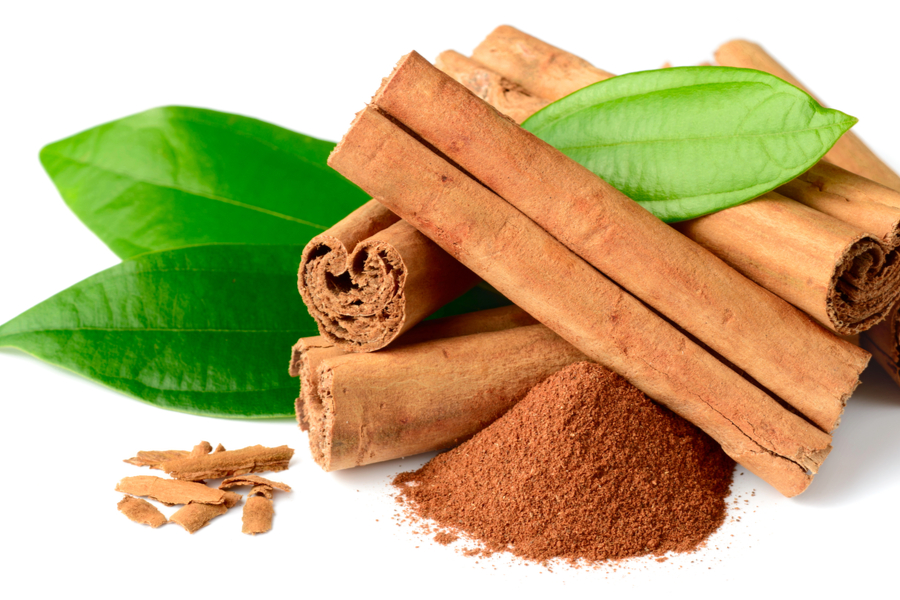

Cinnamon is a fragrant spice that has been used for centuries for its culinary and medicinal properties. It is made from the inner bark of the cinnamon tree, and is native to Sri Lanka and southern India. Ceylon cinnamon, which is grown in Sri Lanka, is considered to be the highest quality cinnamon in the world.
Product 1
Product 2